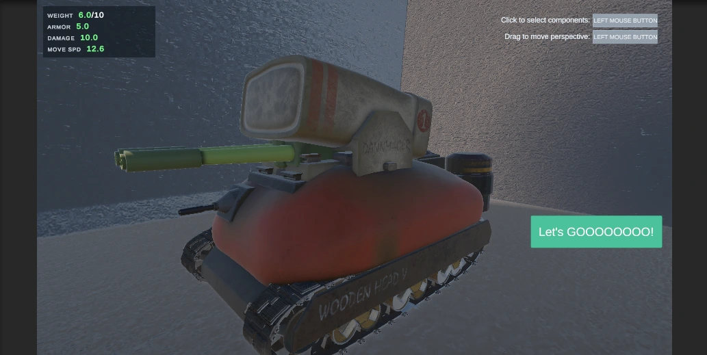
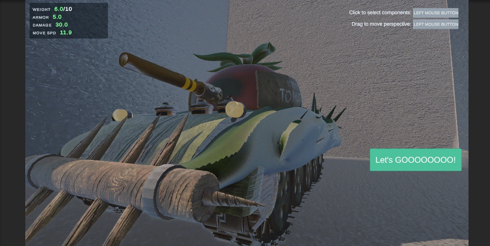
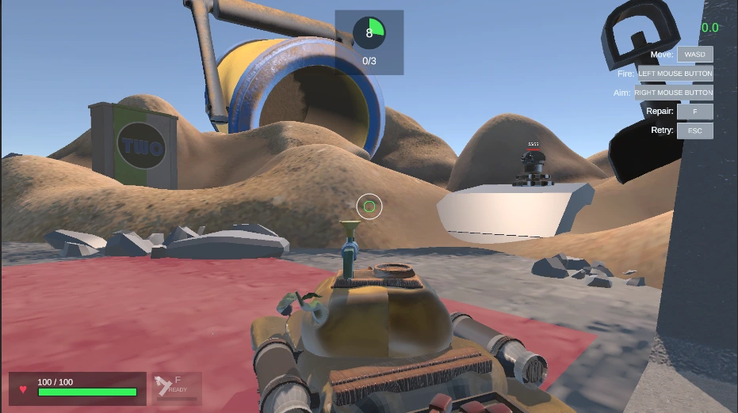
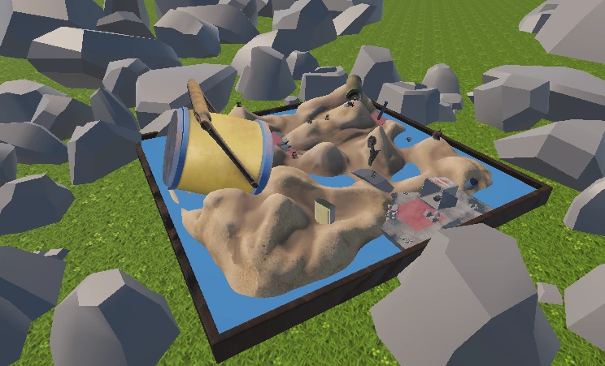

重量约束
组装有总重量上限，替换部件时检查剩余容量；总重量还会带来移动速度惩罚，让部件选择与机动性关联。
组装蔬菜部件，在火力、防护与机动之间取舍，再驾驶战车完成战斗与占领。

蔬菜战车（Vegechariot）是一项 Unity 战车组装与战斗原型。玩家在组装阶段选择蔬菜部件，分别配置火力、装甲与移动系统，完成组装后进入驾驶战斗。
部件选择关联重量、装甲、伤害、装填冷却、爆炸范围与移动速度，使外观组合同时影响战车表现。
组装有总重量上限，替换部件时检查剩余容量；总重量还会带来移动速度惩罚，让部件选择与机动性关联。
火力部件决定伤害等武器属性，移动部件提供速度加成，各部件的装甲共同形成防护能力。


两套组装画面呈现了相同重量下不同的伤害与速度表现。从装配到操控，玩家需要同时考虑输出、防护与机动。
战斗部分包含战车移动、炮塔控制、射击、玩家生命与维修，以及区域占领和任务成功流程。组装与战斗采用不同的界面、镜头和控制状态。

进入区域推进占领进度，并通过目标界面显示任务状态；达成所需占领数量后进入胜利流程。
通过瞄准、装填、生命值与敌人血条反馈当前状态，支持玩家在战斗中判断行动时机。

我负责程序与 Unity 游戏制作，将项目系统、界面和场景接入游戏流程，结合实际运行反馈调整表现，并使用 Codex 辅助修改与核查。
根据实际画面反馈调整血条跟随和显示方式，修正缩放变形与隔着地形仍能看到的问题。
将项目封面接入主菜单背景，并同步更新菜单生成逻辑，让现有场景与后续生成结果保持一致。